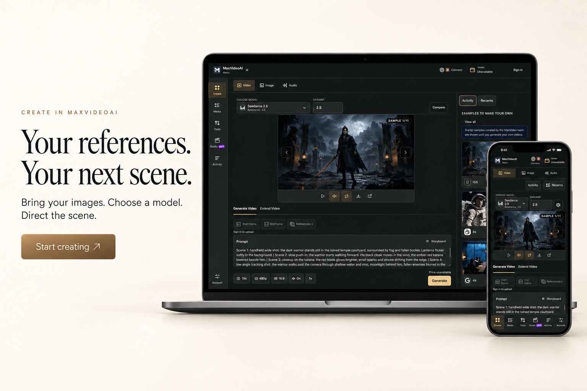
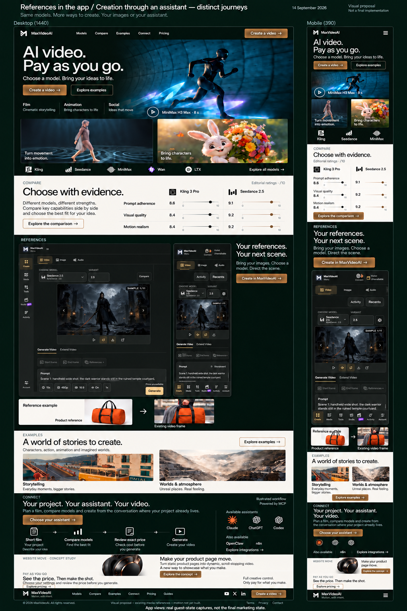
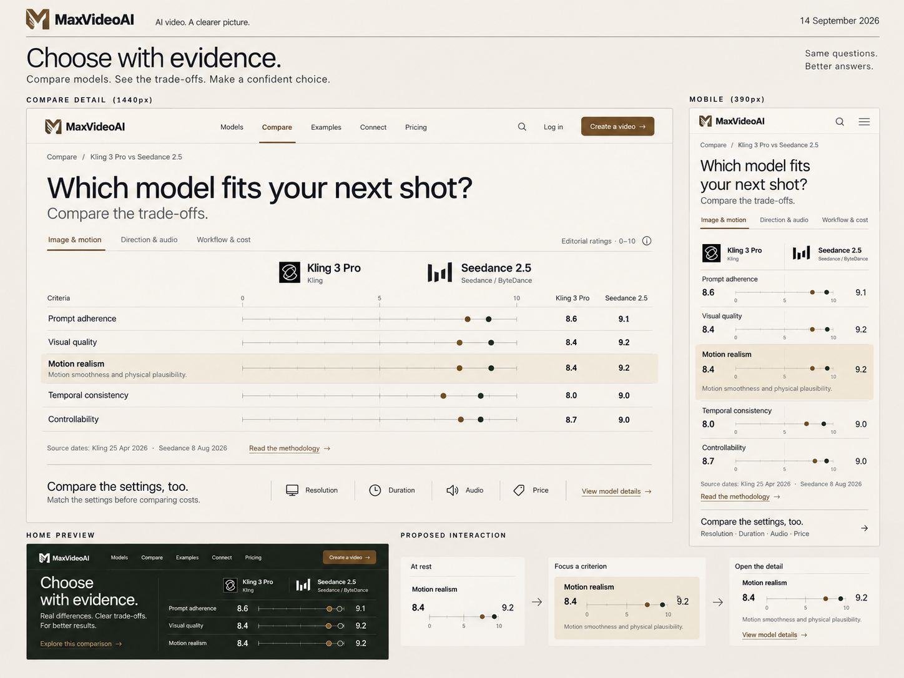
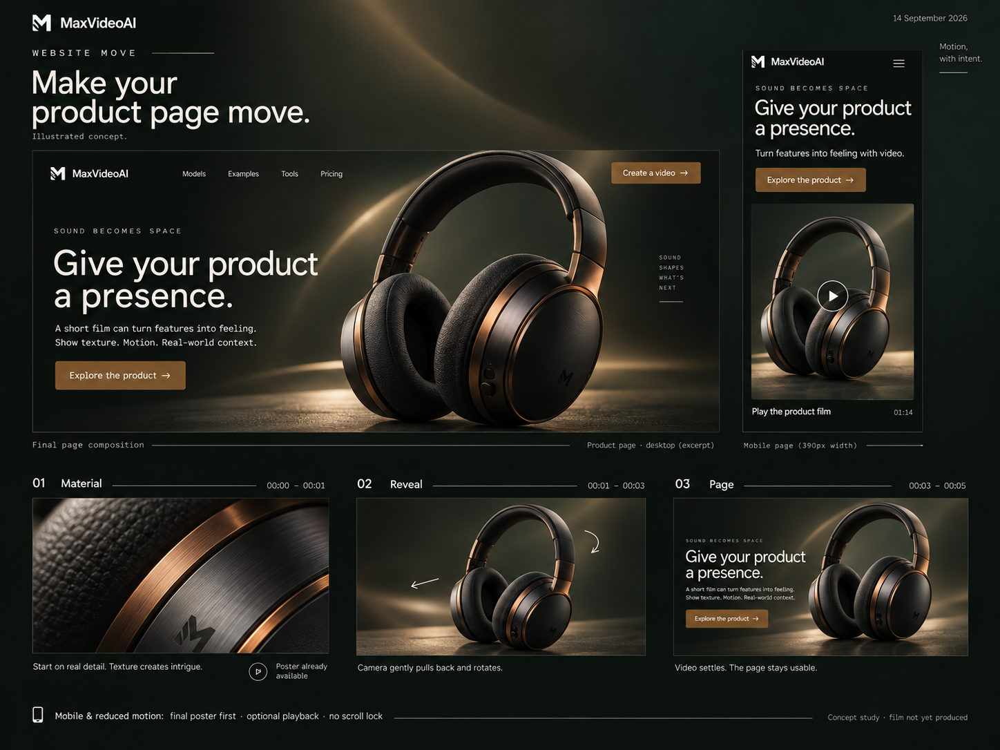

Motion, with intent.
Un même langage pour découvrir les créations, choisir un modèle et comprendre ce que la vidéo apporte à un projet.
Arrakis pour la précision et la profondeur, LocalCan pour les tâches compréhensibles, Pryzm pour la présence des créations. Le fond olive et le bronze prolongent l’app ; les films apportent leurs couleurs.
Un ordinateur, un téléphone, une seule composition.
Le grand écran horizontal montre le workspace. Le téléphone passe au premier plan sur son bord droit, sans masquer la scène centrale. Le texte dispose de sa propre zone à gauche ; le sac disparaît de ce bloc. Sur mobile, retenir le texte suivi du téléphone seul.

Accueil anglais · desktop et mobile
Le cinéma ouvre la page ; les modèles, Compare et la création avec un assistant structurent la suite. Danse, personnage animé, scène narrative et paysage élargissent la sélection. La composition app de cette ancienne planche a été rejetée : le bloc D56 ci-dessus la remplace comme proposition à examiner. Connect dispose de son propre chapitre après la galerie ; Website Move reste le seul chapitre dédié au produit.

Ce que je propose de retenir
Un film dominant, de la danse et de l’animation à l’ouverture, puis du récit et des paysages. L’app et les références sont à gauche du texte desktop ; le titre de la galerie surplombe les créations. Connect montre un parcours d’assistant distinct. Les marques finales seront reprises depuis les fichiers d’origine.
Mouvement envisagé
Le cadre d’ouverture s’élargit légèrement ; les références gardent leur identité pendant que le résultat avance. Sur mobile, actions puis poster, lecture volontaire et étapes dans le flux.
Raccord à finaliser : le système de points appariés de la planche Compare ci-dessous prime sur les règles séparées encore dessinées dans cet accueil. Rétablir la FAQ dans la prochaine maquette desktop et mobile. La composition large de Compare reste à harmoniser avec sa planche dédiée. La deuxième référence du sac reste visible dans les sources ci-dessous.
La maquette suppose OpenClaw et n8n disponibles au lancement, sur instruction d’Adrien. Le hub public consulté le 14 septembre les présente encore en aperçu de validation. Cette vérification restera dans la recette de livraison ; aucun statut technique n’a été modifié.
Voir les captures exactes de l’app desktop et mobile
Captures réelles de l’app, prises le 14 septembre en mode visiteur, avec les exemples intégrés. La planche ImageGen en réinterprète des détails : utiliser ces originaux pour juger l’interface. Ce n’est pas une génération du sac dans le workspace montré.


Ces captures ne sont pas les assets marketing finaux. Préparer avant publication un état connecté de démonstration cohérent ; ne pas retoucher « Sign in », le solde ou le prix pour simuler une capture réelle. Les montants visibles appartiennent aux exemples de la capture, pas à un devis actuel.
Vérifier les images d’origine du sac
Ces deux références sont liées au job de génération. Le voyageur tient déjà le sac sur son image. Le plan de résultat provient de C08 ; aucun Short complet ni présentateur parlant n’est proposé.


Les sources locales privées restent ignorées par Git. La planche raster peut réinterpréter des détails : ces originaux sont la référence pour l’intégration, pas les pixels ImageGen.
Compare · de la synthèse au détail
Des points appariés, des valeurs fixes, une même échelle. Le détail développe la lecture du même critère et donne accès à la méthode, aux capacités et aux paramètres de prix.

Une lecture par besoin
Image et mouvement, direction et audio, puis réglages et coût. Ce regroupement est proposé ; il ne change aucune note et ne supprime pas les informations détaillées.
Une comparaison honnête
Les sneakers ne sont pas utilisées comme preuve de ce duel. Aucun prix n’est avancé tant que les réglages réellement comparables n’ont pas été vérifiés.
Voir les valeurs exactes et leur provenance
| Critère | Kling 3 Pro | Seedance 2.5 |
|---|---|---|
| Prompt adherence | 8.6 | 9.1 |
| Visual quality | 8.4 | 9.2 |
| Motion realism | 8.4 | 9.2 |
| Temporal consistency | 8.0 | 9.0 |
| Controllability | 8.7 | 9.0 |
Évaluations éditoriales sur 10 · dates source : Kling 25 avril 2026, Seedance 8 août 2026. Source locale : engine-scores.v1.json. Aucune nouvelle évaluation réalisée dans ce lot.
Website Move · Sound becomes space
Un casque graphite et cuivre. Sa matière, puis son mouvement, font apparaître une composition de page. Le sujet et le mécanisme sont proposés ensemble, avant production dédiée.

MaterialUn détail de coussinet et de métal donne de la matière au film. Le poster final reste disponible dès l’arrivée sur la page.
RevealRecul et petit pivot du même objet. La composition se dégage ; aucune explosion de pièces ni scroll bloqué.
PageLe casque se stabilise à côté du titre et de l’action. Dans l’intégration, ces textes seront du HTML utilisable.
La marque MaxVideoAI dessinée sur le casque n’est pas une proposition de produit commercial. La marque fictive du site de démonstration sera à distinguer de MaxVideoAI si le concept est retenu.
Les choix que cette revue doit permettre
Juger le langage visuel et la hiérarchie de l’accueil, la lisibilité du nouveau Compare et l’intérêt du casque pour Website Move. Le rythme et la profondeur réels se jugeront dans le prototype animé suivant.
Reste à éprouver : finesse des contrôles, marque exacte, contraste des règles, vraie taille mobile, géométrie Compare, identité des médias et états clavier. Aucun résultat de Core Web Vitals, SEO ou conversion n’est revendiqué.
Une base à choisir, puis à faire vivre.
Après retour : corriger la composition retenue, fabriquer les seuls effets utiles, puis intégrer par gabarits. Le périmètre reste toutes les familles de pages, avec anglais master, français puis espagnol LATAM.